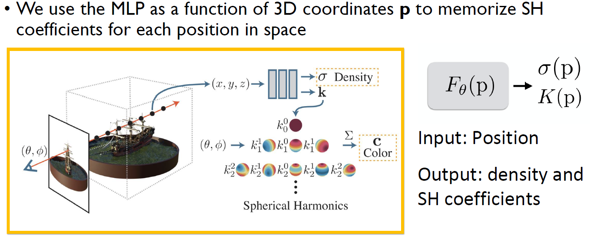
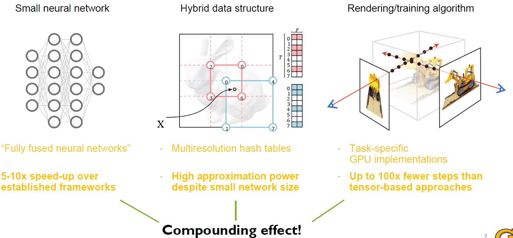
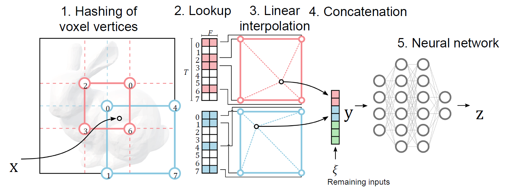
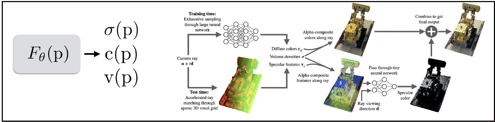
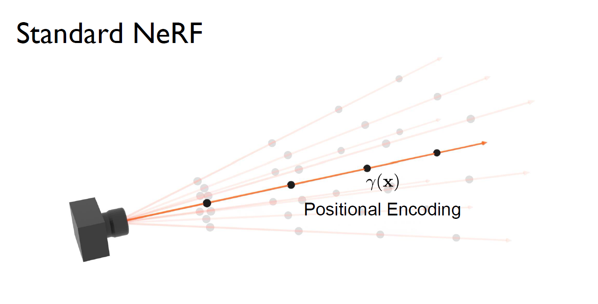
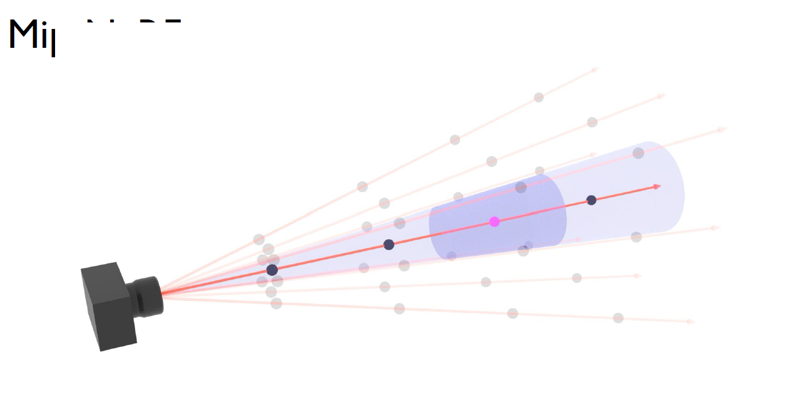
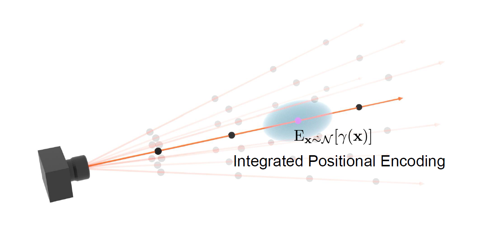

CS 8803 CGA - Advance topics for NeRF
Acceleration Data Structures for NeRF
The NeRF representation takes position and direction as inputs, and produces color and density as outputs. Recall that in L09 we learned the effectiveness of input encoding - positional encoding that can improve the results significantly with a few lines of code (see L09-Positional Encoding).
Next step, what is the best data structure for NeRF? Recall the previously mentioned data structures for geometry: meshes (small memory footprint but hard to optimize), voxels (easy to optimize but large memory footprint).
Plenoxels
Idea I: Let’s try to get rid of MLP.
(Yu*, Friedovich-Keil* et al. 2021, Plenoxels: Radiance Fields without Neural Networks)
Plenoxels are essentially a “voxel grid + spherical harmonics” approach to storing and rendering a 3D scene without the need for a large MLP network. Instead of learning a neural function (MLP) that outputs density and color at every point, Plenoxels store these quantities directly in a dense 3D grid:
-
Voxel Grid: The space is discretized into a regular 3D grid of voxels. Each voxel holds:
- A density value (how much light is absorbed or emitted in that region).
- Spherical Harmonic (SH) coefficients that compactly represent the direction-dependent color of that voxel.
-
Spherical Harmonics (球面谐波): SHs are a set of basis functions on the sphere. An analogy (类比), we can think of spherical harmonics as the “cosine basis” for functions defined on the surface of a sphere. Instead of using cosines in 1D to capture frequencies of a signal, we use spherical harmonics in 2D (on the sphere) to capture angular variation of a function. We can represent compactly by projecting into basis of SH. Here, indicates that color (or radiance) depends on position in 3D space and direction on the sphere. Rather than storing the color for every single direction (which would be huge), we project or “expand” into a finite number of SH basis functions. By keeping only the SH coefficients, we can get a compact representation of how color varies with direction. By keeping a small number of SH coefficients per voxel (rather than a full directional function), we can get a more memory-efficient representation of how color changes with viewing direction.
-
No MLP Required: The figure below shows a conventional NeRF-like pipeline where an MLP predicts density and SH coefficients for each 3D position. Plenoxels remove the MLP entirely. We simply optimize the voxel grid’s density and SH coefficients directly from the input images. To learn the voxel grid, we render the scene from the same viewpoints as your training images. Then we compare (via a photometric loss, e.g., mean squared error) the rendered pixels to the real input pixels. Because the voxel grid is just a big table of parameters (density + SH coefficients), we can do gradient-based optimization (like backprop) on those parameters directly. Iterating this process lets the grid converge so that rendered views match the real images.

- Rendering: When you render, you sample through the voxel grid. For each ray-voxel intersection, you:
- Retrieve the voxel’s density.
- Evaluate its SH coefficients for the viewing direction to get a color contribution.
- Accumulate these contributions along the ray to form the final pixel color.
In short, Plenoxels turn the 3D volume into a big “lookup table” of densities and SH basis coefficients. This approach sidesteps the complexity and runtime cost of a learned MLP, while still leveraging spherical harmonics for compact, direction-dependent color.
Instant NGP
Idea II: Let’s try hybrid representations.
(T. Müller et al. 2022, Instant Neural Graphics Primitives with a Multiresolution Hash Encoding)
This article shows an approach that enables super-resolution rendering of neural radiance field in real-time and accommodates a new neural representation structure by hybridizing networks and octrees.
Instant NGP (Instant Neural Graphics Primitives) achieves high-performance rendering and training through a hybrid data structure that combines spatial hashing with a small neural network (MLP).

-
Small, “fully‐fused” MLP
Instead of using a large network (as in typical neural‐field approaches like NeRF), Instant‐NGP relies on a small multilayer perceptron. By “fully fused”, it means that the neural net operations (layers, activations, etc.) are tightly compiled (often CUDA‐fused) for maximum efficiency. This gives a 5–10× speed‐up over conventional deep‐learning frameworks. -
Multi‐resolution hash tables
Alongside the MLP, Instant‐NGP uses a spatial‐hashing strategy to store learned “voxel” parameters at multiple resolutions. In the diagram, the bounding volume is subdivided into overlapping grids (of various coarse‐to‐fine 粗到细 scales). Rather than storing a huge feature grid, each grid cell is hashed to a compact array of learnable parameters. -
Lookup + interpolation + concatenation
For a query point in 3D:
- We find which grid cells (voxel corners) it intersects at each resolution.
- Each cell’s learnable parameters are looked up via hashing.
- Those parameters (at the relevant corners) are blended via linear interpolation to produce a feature vector for each resolution.
- Features from all resolutions are concatenated (plus any other inputs, e.g. viewing direction).
- This concatenated feature vector is fed into the small MLP.
-
Task‐specific GPU rendering/training
Once the MLP outputs (e.g., color, density, SDF, etc.) are known, Instant‐NGP uses tailored GPU kernels to project and accumulate these results for rendering or training. Because each query is so lightweight and the hashing reduces memory usage, we can train or render with significantly fewer steps—on the order of 100× fewer calls than a large tensor‐based approach.
Put differently, the hash‐based multi‐resolution grid learns a coarse‐to‐fine mapping that acts almost like a highly efficient “lookup table” for local geometry or appearance. The small neural net then only has to learn residual details, so it converges much faster. This combination of “spatial hashing + small MLP + specialized GPU implementation” underpins Instant‐NGP’s ability to train and render neural graphics extremely rapidly. Instant NGP is good at rendering really complex scenes, e.g., an open space with many details.
Separating NeRF Geometry and Appearance
- NeRF “bakes” appearance / color information into scene geometry, so when scene is re-lit, this requires training of a new NeRF.
- Multiple approaches have focused on disentangling (分解) geometry and appearance information
- NeRD: Decompose images into shape, illumination, and appearance components (compute analytical BRDF as opposed to a single radiance value).
- NeRV (Neural Reflectance and Visibility fields): Decompose image into visibility, direct light, indirect light, and BRDF.
Recall Phong Shading with separated terms for Diffuse and Specular Terms (diffuse + specular + ambient). The key idea is that instead of using SH coefficients, the MLP directly outputs density, diffuse colors, and specular features. Both the diffuse colors and the features are volume-rendered, and a final MLP evaluation is performed at the end to transform the diffuse color and features into the final color.

Anti-Aliasing
Challenges: Multi-Resolution.
NeRF Rendering at Full Resolution: Produces high-quality, photorealistic results.
NeRF at Different Distances/Resolutions: Introduces noticeable aliasing artifacts (“jaggies”).
Training NeRF on Multi-resolution Data: Slightly improves low-resolution performance but degrades high-resolution quality, making it ineffective.
Introducing mip-NeRF: Trained on the same data, it maintains high-resolution rendering across multiple scales.
Key Advantage of mip-NeRF: Unlike NeRF, its performance does not degrade when trained on multiscale data.
Pre-filtering with a mip-map
The problem is solved with prefiltering, precomputing images at different scales, a technique known as mipmap or image pyramid. With a prefiltered representation, trilinear interpolation can efficiently retrieve a properly downsampled image at the correct location and scale, a method widely used in real-time graphics for texture mapping. So, mipmaps reduce image aliasing, mip-NeRF reduces NeRF aliasing.
Difference between standard NeRF and mip-NeRF
Standard NeRF treats every sample on a ray as a single 3D point and applies a “positional encoding” (the sin/cos expansions) to just that point. By contrast, Mip‐NeRF recognizes that each sample is really a small conical region along the ray, so it integrates the positional encoding over that region instead of evaluating it only at a single point.


Concretely, standard NeRF does
for each point .
However, mip‐NeRF averages (integrates) those basis functions over the portion of space that the ray covers there, yielding
which captures how the ray “cone” sweeps out a region in space.

By representing samples more accurately (with an integral rather than a point), mip‐NeRF significantly reduces aliasing artifacts and improves multi‐scale consistency in the rendered scenes.
Large-Scale Rendering
When rendering large scenes, since regular spacing does not scale, how to march efficiently?
Idea I: Exponential Stepping
- How to march efficiently?
- Regular spacing is O(size)
- Solution:
- Exponential stepping is O(log(size))
Idea II: Skipping Empty Space
- Exponential stepping does not help (air in front of camera, where steps are most dense)
- Geometry not known in advance (training data are RGB images)
- Solution: online-fitted occupancy grid
- Bitwise: 1 == occupied, 0 == empty
- Z-order: cache-efficient; trivial mip-mapping
- Look-up scale determined by cone width
Temporally Stable Training
During training, a NeRF’s weights can “wander” in parameter space from step to step—often causing flickering (闪烁) or noisy updates when viewed as a running render. Temporally stable training addresses that by applying a temporal low‐pass filter (in practice, an exponential moving average) to the network weights as they are being optimized.
Concretely, we still train the network weights in the usual way, but keep a running average of those weights over recent training steps. For inference (i.e., for final rendering or evaluation), use the smoothed (EMA) weights rather than the moment‐to‐moment weights. Because the EMA filters out quick oscillations in parameter space, the resulting rendered views appear more stable over time, eliminating much of the flicker and noise that can come from raw, per‐step weights.
Future Research Directions
Challenges to Address
- Neural scene representations do not (yet) “fully” disentangle all scene attributes.
- Designing solutions to large-scale dynamic scenes is an open problem.
- Generalization and real-time training/inference still pose significant hurdles (障碍，困难).
(Few-shot NeRF, Generating NeRFs from 2D Generative Models, Enabling specific edits, Semantic Editing, Manipulating captured scenes)